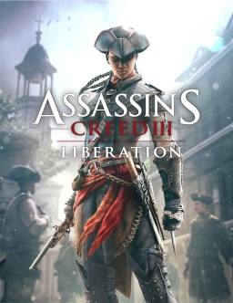

Top i Bottom 3 gier z serii Assassins Creed
Spis Treści:
Najlepsze 3
1. Assassin's Creed Unity
2. Assassin's Creed II
3. Assassin's Creed Brotherhood
Najgorsze 3
1. Assassin's Creed Valhalla
2. Assassin's Creed III: Liberation
3. Assassin's Creed IV: Black Flag

1. Assassin's Creed Unity
Opis: Assassin’s Creed: Unity – przygodowa gra akcji z serii Assassin’s Creed. Premiera została zapowiedziana na 11 listopada 2014 roku. Gra została wydana na PC, PlayStation 4 oraz Xbox One. Akcja gry rozgrywa się w Paryżu w czasach rewolucji francuskiej. Gracz wciela się w obywatela francuskiego o imieniu Arno Dorian, członka bractwa asasynów. Przybrany ojciec głównego bohatera zostaje zamordowany, a Arno stara się go pomścić i dowiedzieć kto za tym stoi. Dołącza do zakonu asasynów.
Ogrywana platforma: Playstation 4 / Xbox Series X
Oceny na Metacritic: 72 (wersja na Xbox One) / 72 (wersja na Xbox One)

2. Assassin's Creed II
Opis: Assassin’s Creed II – przygodowa gra akcji stanowiąca kontynuację wydanego w 2007 roku Assassin’s Creed. Premiera na Xboksa 360 i PlayStation 3 miała miejsce 17 listopada 2009 roku. Wersja gry na Microsoft Windows ukazała się w Polsce 4 marca 2010 roku, w Europie 5 marca, a w USA 9 marca. Akcja Assassin’s Creed II rozgrywa się w renesansowych Włoszech i Wenecji (dokładniej w Republice Florenckiej i Republice Weneckiej), zaś głównym bohaterem jest Ezio Auditore da Firenze. W grze pojawia się młody Leonardo da Vinci, dzięki któremu Ezio zyskuje nową broń i gadżety, które może wykorzystać w walce, w pewnym momencie zyskuje również możliwość skorzystania z zaprojektowanej przez niego lotni. Dostępnych jest także kilka nowych rodzajów broni: topór, młot, buława, włócznie, dwa rodzaje mieczy, halabarda oraz dwa mniejsze ostrza. Chociaż Ezio nie może nosić ze sobą części broni, potrafi odebrać je przeciwnikom i wykorzystać w walce.
Ogrywana wersja: Assassin's Creed The Ezio Collection
Ogrywana platforma: Xbox Series X
Oceny na Metacritic: 89 (wersja na x360) / 71 (The Ezio Collection)

3. Assassin's Creed Brotherhood
Opis: Assassin’s Creed: Brotherhood – przygodowa gra akcji wyprodukowana i wydana w 2010 roku przez Ubisoft. Jest to trzecia część serii Assassin’s Creed. Gra jest bezpośrednią kontynuacją drugiej części cyklu, nie należy jednak jej mylić z Assassin’s Creed III, której akcja jest osadzona w nowym przedziale czasowym, wraz z nowym bohaterem. Gracz ponownie wciela się w postać Ezia Auditorego da Firenze. W Brotherhood wprowadzono tryb dla wielu osób. Premiera komputerowej wersji gry odbyła się 17 marca 2011. Gra rozpoczyna się zaraz po wydarzeniach z drugiej części serii. Ezio wraca do Monteriggioni, jednak zaraz potem willa zostaje zaatakowana i zniszczona przez Cezara Borgię. Zmuszony do ucieczki, Ezio wybiera się do Rzymu, aby stworzyć od podstaw zakon asasynów i z jego pomocą ostatecznie rozprawić się z templariuszami.
Ogrywana wersja: Assassin's Creed The Ezio Collection
Ogrywana platforma: Xbox Series X
Oceny na Metacritic: 90 (wersja na x360) / 71 (The Ezio Collection)

1. Assassin's Creed Valhalla
Opis: Assassin’s Creed Valhalla – przygodowa gra akcji wyprodukowana przez kanadyjskie studio Ubisoft Montréal, stanowiąca dwunastą główną odsłonę serii Assassin’s Creed i kontynuację Assassin’s Creed: Odyssey. Akcja gry dzieje się w IX wieku w średniowiecznej Anglii. Gra została wydana 10 listopada 2020 na platformy Microsoft Windows, PlayStation 4, Xbox One, Xbox Series X/S oraz 12 listopada na PlayStation 5. Gracz wciela się w Eivora, wikińskiego najeźdźcę prowadzącego klan Kruka do walki przeciwko królestwom anglosaskim. Możliwe jest dostosowanie fryzury, barw bojowych, ubioru i tatuaży Eivora, a w dowolnym momencie przełączenie się na inną płeć postaci. Głosu męskiej wersji udziela Magnus Bruun, a żeńskiej – Cecilie Stenspil. Wachlarz dostępnych dla postaci broni poszerzono m.in. o cepy i wielkie miecze, z kolei system walki został przeprojektowany w taki sposób, żeby możliwe było walczenie dwoma egzemplarzami niemal każdej broni, w tym tarcz. Według twórców, każdy znaleziony przez gracza element wyposażenia jest wyjątkowy.
Ogrywana platforma: Xbox Series X
Oceny na Metacritic: 84

2. Assassin's Creed III: Liberation
Opis: Assassin’s Creed III: Liberation – przygodowa gra akcji z otwartym światem z serii Assassin’s Creed. Gra została wyprodukowana przez Ubisoft Sofia i wydana przez Ubisoft na konsolę przenośną PlayStation Vita. Światowa premiera odbyła się 30 października 2012 roku, a europejska dzień później. 15 stycznia 2014 pojawiła się wersja na konsole PlayStation 3 i Xbox 360 oraz komputery osobiste pod nazwą Assassin’s Creed: Liberation HD. Akcja gry rozpoczyna się w 1765 roku i rozgrywa się na przestrzeni piętnastu lat. Główną bohaterką gry jest Aveline de Grandpré należąca do bractwa asasynów. Jej mentorem jest czarny niewolnik o imieniu Agaté, który zbiegł swojemu właścicielowi i ostatecznie stał się dowódcą bractwa zabójców w Nowym Orleanie. Aveline jest też pierwszą protagonistką serii.
Ogrywana wersja: Assassin's Creed Liberation Remastered
Ogrywana platforma: Xbox Series X
Oceny na Metacritic: 62 (wersja na x360) / 77 (część Assassin's Creed III Remastered)

3. Assassin's Creed IV: Black Flag
Opis: Assassin’s Creed IV: Black Flag – przygodowa gra akcji stworzona przez Ubisoft Montreal, szósta odsłona głównej serii Assassin’s Creed. Jej premiera miała miejsce 29 października 2013 w Ameryce Północnej, 31 października 2013 w Australii, 1 listopada 2013 w Europie i 28 listopada 2013 w Japonii. Dostępna jest na platformy PC, PlayStation 3, Wii U, Xbox 360, PlayStation 4 i Xbox One. Akcja tytułu rozgrywa się na XVIII-wiecznych Karaibach, gdzie gracz wciela się w kapitana statku pirackiego „Kawka” – Edwarda Jamesa Kenwaya.
Ogrywana platforma: Xbox Series X
Oceny na Metacritic: 86 (wersja na x360)